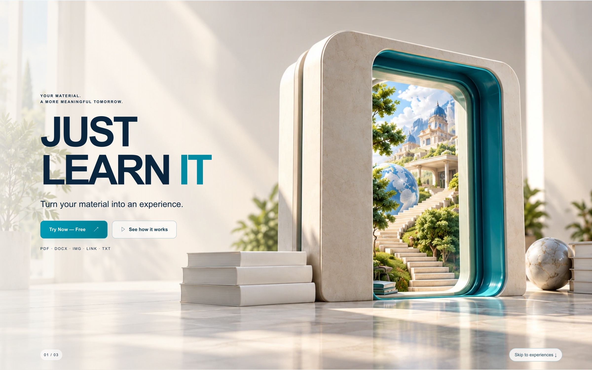
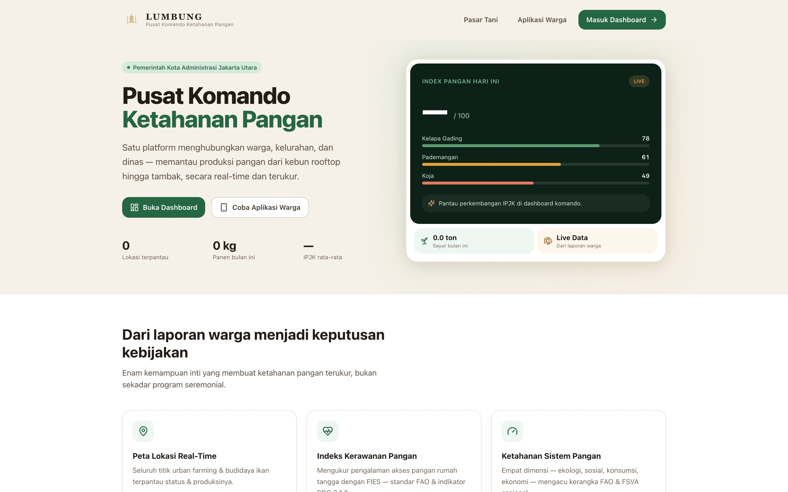
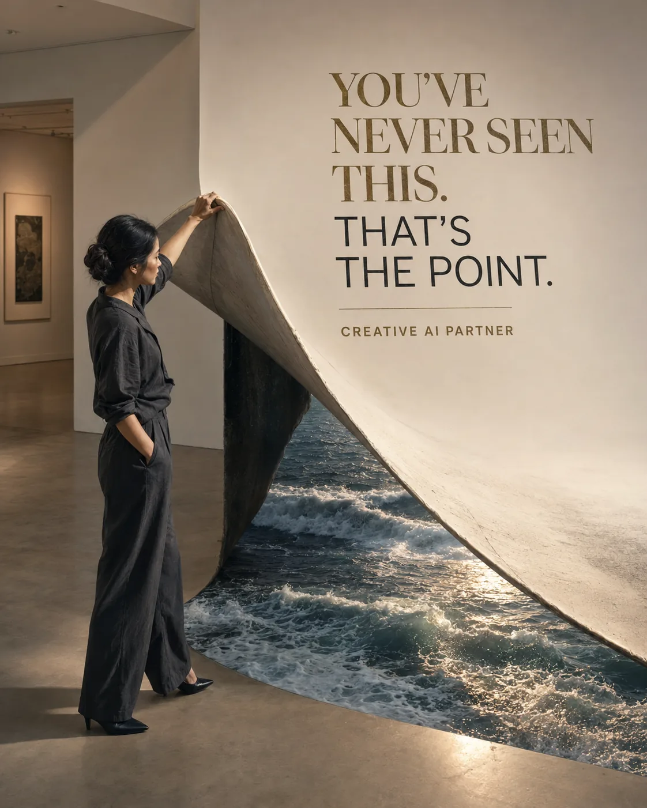
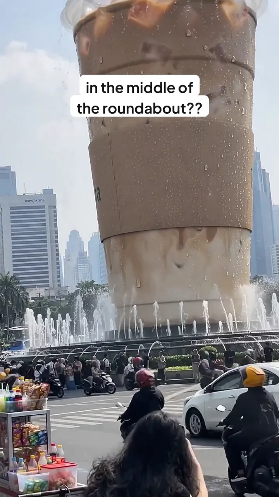
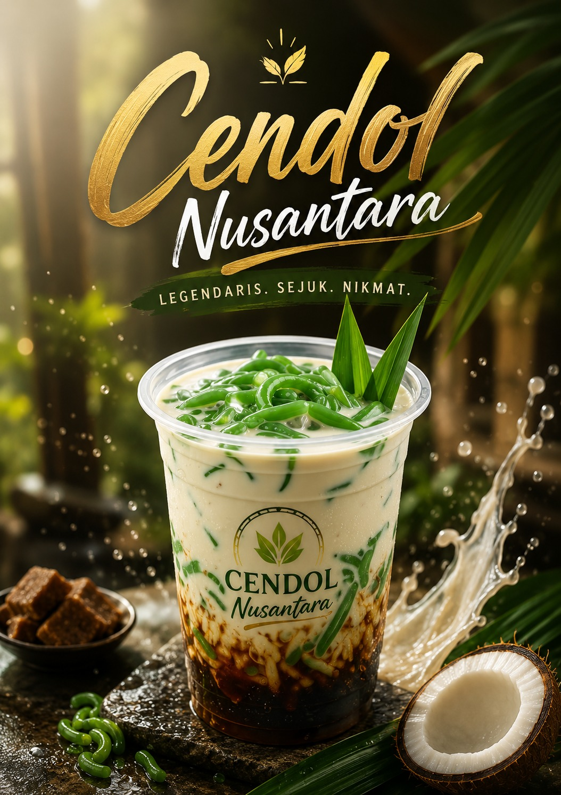

Creative AI PartnerAI-productieplatform
CAP / CREATIVE AI PARTNER01 /
Creëer.
Inspireer.
Maak impact.
Inspireer.
Maak impact.

IMAGEVIDEOVOICE
Beeld- en videocreatie
in één productieplatform.

AI PRODUCT
DATA & ANALYTICS
CREATIVE DIRECTIONAI-PRODUCT
DATA
CREATIEF
INDONESIA → NETHERLANDS
AI PRODUCT · CREATIVE · RELATIONSHIP MANAGEMENT
Ik leid AI-productstrategie bij MatchupSkills, stuur creatieve productie aan bij Creative AI Partner, en beheerde vier jaar lang een relatieportefeuille van 500+ klanten bij Bank BRI. Ik kom oorspronkelijk uit Indonesië en woon nu in Den Haag, waar ik een masteropleiding volg in Data-Driven Business aan De Haagse Hogeschool — een van meerdere masteropleidingen die ik volg, naast eerdere studies aan de Universiteit van Indonesië.
SELECTED
PROJECTS,
ALL LIVE.
Sleep of veeg om te ontdekken · Klik om te openen




Drie producten die ik ontwierp
en run, van het eerste idee
tot de live site.
Beeld- en videocreatie
in één productieplatform.
Persoonlijk leren,
gebouwd als een systeem.
Voedselzekerheid,
zichtbaar gemaakt.
Sleep of veeg om te ontdekken · Klik om te openen







CAMPAIGN IMAGES,
VIDEO ADS AND PROMOS.
Papers en voorstellen over
cybersecurity, digitaal beleid
en voedselsystemen.
Indonesiër, woont in Den Haag.
Vier jaar in het bankwezen,
nu bouw ik AI-producten
en studeer ik data.
The Hague